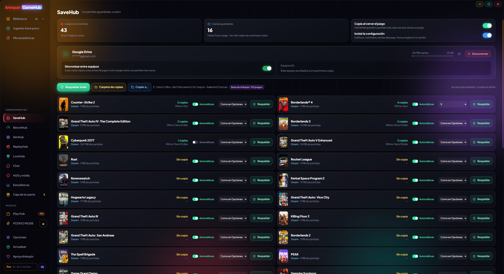

Kayıtların her zaman güvende
SaveHub, GameHub'ın kayıtlı oyunlarına göz kulak olan bölümüdür: oyunu kapattığında her kaydı yedekler ve onu tek tıkla, bilgisayarında ya da kendi bulutundan geri getirmeni sağlar.

Otomatik yedekler
Bir oyunu her kapattığında GameHub kaydını yedekler. Hatırlamana gerek yok.
Bir oyunu kapattığında GameHub, kayıtlarının sıkıştırılmış bir yedeğini seçtiğin klasöre alır (ideal olarak başka bir diske ya da zaten bulutta tuttuğun bir klasöre). Oyunun ayarlarını (grafik, kontroller ve tuşlar) ve bazı oyunların Windows kayıt defterinde tuttuğu kayıtları da yedekleyebilir.
Günlükleri veya önbellekleri (örneğin birçok oyunun ürettiği gölgelendirici önbellekleri) asla yedeklemez: yalnızca önemli olanı.
Saatlerce açık bıraktığın oyunlar (MMO'lar, hayatta kalma…) için ArlequinPro ile oturum sırasında her 15, 30 veya 60 dakikada da yedekleyebilir.
Her oyunun kendi "Otomatik" anahtarı ve her kayıt klasörünün kendi "Kopyala" anahtarı vardır. Bir oyunun kayıtları 250 MB'ı aşarsa seni uyarır ve yedekleyip yedeklemeyeceğine sen karar verirsin. Ve bir yedeği hiç silinmesin diye sabitleyebilirsin.
Yalnızca doğrudan indirme EmuHub konsol oyunlarının kayıtlarını ve kayıt durumlarını da yedekler ve ArlequinPro ile otomatik kayıt durumları oluşturur.
Nasıl kullanılır
- Kendi kendine çalışır: ayarlanacak bir şey yok.
- Oyunun sayfasındaki “Şimdi yedekle” hemen bir yedek alır.
- SaveHub'da “Hepsini yedekle” tüm oyunlarını yedekler.
Bozuk kayıtlara karşı koruma
Bir yedek bozuk çıkarsa, iyiler kaybolmaz.
Otomatik bir yedek bir öncekinden çok daha küçük çıkarsa (örneğin oyun kötü kapandığı veya kayıt bozulduğu için), GameHub sahip olduğun iyi yedekleri silmez: yenisinin yanında onları da saklar.
Oyun başına birkaç yedek tutar (ArlequinFree ile 3; ArlequinPro ile varsayılan 5 ve 10'a kadar): sınırı aştığında en eskisi silinir.
Nasıl kullanılır
- Varsayılan olarak açıktır. Seçenekler → SaveHub'dan değiştirebilirsin.
- GameHub oyunun kötü kapandığını (donma veya çökme) fark eder: o yedek işaretlenir, öncekini geri dönebilmen için sabitler ve oyunu kapattığında kaydının sağlam olup olmadığını sorar; değilse öncekini geri yükler.
- SaveHub, bu ay oynadığın ama son kaydının yedeği olmayan oyunlar için seni «Şimdi yedekle» ile uyarır.
Yedeklerini geri yükle ve yanında götür
Herhangi bir yedeğe tek tıkla dön ya da onları bir USB belleğe al.
Her oyunun sayfasında yedeklerini (ne zaman ve neden alındıkları: oyunu kapatırken, elle…) görürsün ve herhangi birini geri yükleyebilirsin. Geri yüklemeden önce GameHub, yanlış yaparsan diye şu an sahip olduğunu saklar.
“Şuraya kopyala…” ile tüm yedeklerini, her oyunun en sonuncusunu, başlatıcısı olmayan oyunların yedeklerini veya belirli bir oyunun yedeklerini başka bir klasöre ya da USB belleğe alırsın.
Geri yükleme sırasında bir şey yarıda başarısız olursa GameHub onu geri alır ve kayıtlarını olduğu gibi bırakır.
Geri yüklemeden önce GameHub yedeğin eksiksiz olduğunu denetler: hasarlıysa hiçbir şeye dokunulmaz.
Nasıl kullanılır
- Oyun sayfası → Kayıtlı oyunlar → Geri yükle.
- SaveHub → “Şuraya kopyala…”.
Kayıt yuvaları
Yalnızca tek kayda izin veren oyunlarda birden fazla kayıt. ArlequinPro ile.
Bazı oyunların tek kaydı vardır: baştan başlamak istersen ya da bilgisayarında başka biri oynasın istersen, seninkini kaybedersin. Kayıt yuvalarıyla oyun başına 10 kayda kadar sahip olur ve aralarında tek tıkla geçiş yaparsın.
Yeni bir yuva sıfırdan ya da kullandığın kaydın bir kopyası olarak başlayabilir. Geçerken GameHub önce mevcut kaydı kendi yuvasına saklar, sağlam olduğunu denetler ve bir şey başarısız olursa her şeyi olduğu gibi bırakır. Oyun ayarların değişmez.
Bulutun bağlıyken yuvalar orada da saklanır ve tüm bilgisayarlarında sahip olursun.
Nasıl kullanılır
- Oyun sayfası → Kayıtlı oyunlar → Kayıt yuvaları.
- Oyun kapalıyken: “Yuva 2”ye tıkla ve nasıl başlayacağını seç.
Kayıtların kendi bulutunda
Google Drive, OneDrive veya Dropbox'ını bağla ve kayıtlarını başka bir bilgisayara götür.
Her yedek, bulutundaki bir GameHub klasörüne yüklenir: dosyalarının geri kalanına dokunulmaz. Bir yedeği başka bir bilgisayara getirdiğinde, Windows kullanıcı adın farklı olsa ya da oyunların başka bir diskte olsa bile GameHub onu o bilgisayara uyarlar.
ArlequinFree ile yedeklerin 1 bilgisayardan bulutuna yüklenir (bilgisayar değiştirirsen, 30 günde bir yenisine geçebilirsin) ve herhangi bir bilgisayardan bulutta neyin olduğunu görüp bir yedeği elle geri yükleyebilirsin. ArlequinPro ile kayıtların tüm bilgisayarlarında kendiliğinden eşitlenir ve başka birinde daha yeni bir kayıt varsa GameHub seni uyarır.
Bulut senindir: Arlequin kayıtlarını kendi hiçbir sunucusunda tutmaz. Her hizmetin resmi sayfasında giriş yaparsın ve GameHub parolanı asla görmez.
Nasıl kullanılır
- SaveHub'da Google Drive, OneDrive veya Dropbox'a tıkla ve giriş yap.
- Bundan sonra her yedek kendiliğinden yüklenir.
- Aynı anda yükleme yapan iki bilgisayar artık birbirinin üzerine yazmaz ve bulut doluysa ya da oturumun dolduysa bunu sana açıkça söyler.
Her oyunun nereye kaydettiğini bilir
Bilmediğini ise sen oynarken öğrenir.
Her oyun kayıtlarını farklı bir yerde tutar (Belgeler, AppData, oyun klasörü, kayıt defteri…). GameHub bunu mağazaların bilgisayarında tuttuklarından (örneğin Steam'in bulut kurallarından) ve topluluk veritabanından bilir.
Bilmiyorsa, oynarken oyunun hangi dosyalara yazdığını izler ve kayıt klasörünü öğrenir. Ayrıca kayıtlar karışmasın diye birkaç oyunun paylaştığı klasörleri (Call of Duty'ninki gibi) tespit eder. Ve her zaman elle bir klasör ekleyebilirsin.
Daha fazla kaydı oyunun motoruna (Unity, Unreal, Ren'Py, RPG Maker, GameMaker, Godot) ve mağazaya (GOG bulutu, Xbox / Game Pass ve Ubisoft Connect) göre bulur, kendi başlatıcısından açılan oyunları (GTA IV gibi) anlar ve diğer programların klasörlerini ya da Rockstar'ın paylaşılan klasörlerini kayıt sanmaz. Oyun sayfası, her klasörün nereden geldiğini söyler.
Bir oyunun bilinen yolu yoksa, klasörünü adına ve kurulum klasörünün adına göre olağan yerlerde (My Games, Belgeler, Kayıtlı Oyunlar ve AppData, yayıncının klasörünün içinde de) ayarlarıyla birlikte arar. Diğer programların klasörlerini veya yalnızca çökme raporları ya da önbellekler içeren klasörleri almaz.
Nasıl kullanılır
- Oyun sayfası → Kayıtlı oyunlar → “Klasör ekle”.
Senin tarzın
SaveHub'daki her şey Seçenekler → SaveHub'da ayarlanır.
- Yedek klasörü (ve aç).
- Oyunu kapatırken yedekle ve ayarları da ekle.
- Bozuk kayıtlara karşı koruma.
- Oyun başına tutulan yedekler ve oynarken yedekleme.
- Sıkıştırma: hızlı, normal veya maksimum (daha az yer kaplar, biraz daha uzun sürer).
- “Asla yedekleme”: yedeklerinde istemediğin dosyalar veya klasörler (örneğin
*.mp4veyaScreenshots).
Nasıl kullanılır
- Seçenekler → SaveHub.
Kayıtların bugünden itibaren güvende
⬇ Doğrudan indir 🛍️ Microsoft Store'dan indirWindows 10 ve 11 (64 bit) · Ücretsiz · Kendini günceller